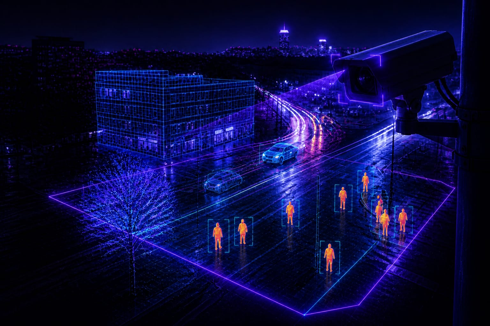
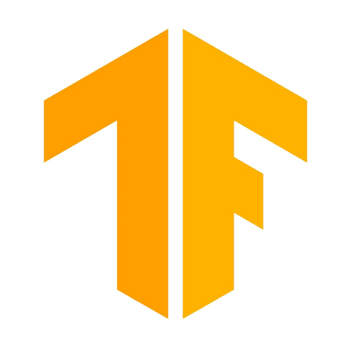
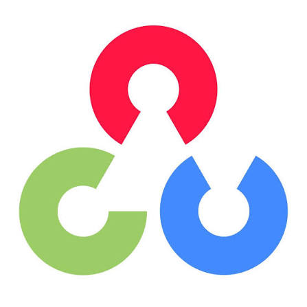
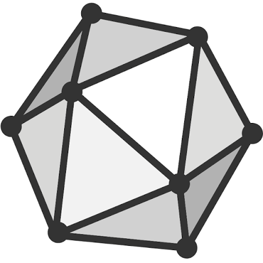

FrameIQ
01 / 03
AI Vision · Agentic Intelligence · India
FrameIQ builds enterprise-grade Computer Vision and Agentic AI systems that turn raw visual data into autonomous decisions for Indian industry.
FrameIQ AI · Panvel, Maharashtra · Est. 2025
TRUSTED BY
FrameIQ
01 / 03
Explore the platform
Our Expertise
Specialized computer vision solutions tailored to transform your industry
AI-powered defect detection, production line monitoring, and quality inspection built for Indian manufacturing.
India's AI crop health advisory. Farmers photograph crops our model instantly diagnoses disease, pests, and nutrient issues.

Intelligent threat detection, access control, and perimeter monitoring 24/7 automated surveillance without human fatigue.

Autonomous AI agents combining vision intelligence with decision-making self-learning systems that adapt with your business.
OUR PROCESS
A pragmatic, experiment-first approach that delivers measurable ROI not lengthy enterprise pilots.
We map your camera network, operational KPIs, and pain points then define exactly what AI needs to see and do.
Our team builds a working CV pipeline in 1–2 weeks. You see real inference on your own footage before any commitment.
We integrate with your existing infra CCTV, ERP, PLC with zero workflow disruption. Live in 2–6 weeks.
Models retrain on new data continuously. You get a live dashboard, alerts, and a dedicated AI engineer on standby.
Typical go-live: 2–6 weeks · No long-term commitment required
Explore computer vision use cases for selected production and facility views.
Our Infrastructure



What We Build
Inspection, defect detection, and production-line monitoring for manufacturing.
Explore Industrial AIAn AI crop-health advisory focused on disease, pest, and nutrient insights.
Explore AgricultureAutonomous AI agents combining vision intelligence with decision-making.
Explore Agentic AIA growing library of plug-and-deploy computer-vision models and workflow components.
Explore AI StoreWHY FRAMEIQ
Ready to see FrameIQ in action?
Book Free CallIDEAS FROM THE ENGINEERING FRONTLINE
Client Results
Frequently Asked Questions
Panvel, Maharashtra, India
We reply within 24 hours on business days.